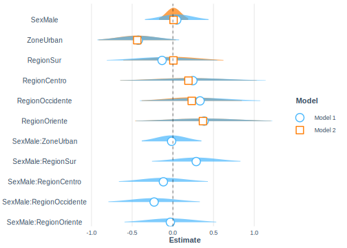

8.3 Modelo log lineal para tablas de contingencia
El término modelo log-lineal, que básicamente describe el papel de la función de enlace que se utiliza en los modelos lineales generalizados. Iniciaremos esta sección con los modelos log-lineales en tablas de contingencia. El modelo estadístico es el siguiente:
\[ \log(p_{ijk}) = \mu + \lambda_i^X + \lambda_j^Y + \lambda_k^Z + \lambda_{ij}^{XY} , \]
donde:
\(p_{ijk}=\) la proporción esperada en la celda bajo el modelo.
\(\mu = \log(p_{0})=\frac{1}{\#\ de\ celdas}\)
El modelo log-lineal en R se ajusta utilizando la función svyloglin como sigue:
mod1 <- svyloglin(formula = ~pobreza+Sex + pobreza:Sex,
design = diseno)
s1 <- summary(mod1)
s1## Loglinear model: svyloglin(formula = ~pobreza + Sex + pobreza:Sex, design = diseno)
## coef se p
## pobreza1 0.219673 0.06778 0.001192
## Sex1 0.052843 0.01625 0.001145
## pobreza1:Sex1 0.005583 0.02350 0.812175En la salida anterior se puede observar que, con una confianza del 95% el estado de pobreza es independiente del sexo, como se ha mostrado con las pruebas anteriores.
Ahora bien, puesto que en la salida anterior se pudo observar que la interacción es no significativa, entonces, ajustemos ahora el modelo sin interacción:
mod2 <- svyloglin(formula = ~pobreza+Sex,
design = diseno)
s2 <- summary(mod2)
s2## Loglinear model: svyloglin(formula = ~pobreza + Sex, design = diseno)
## coef se p
## pobreza1 0.21997 0.06752 0.0011230
## Sex1 0.05405 0.01577 0.0006076Por último, mediante un análisis de varianza es posible comparar los dos modelos como sigue:
anova(mod1, mod2)## Analysis of Deviance Table
## Model 1: y ~ pobreza + Sex
## Model 2: y ~ pobreza + Sex + pobreza:Sex
## Deviance= 0.07719 p= 0.8126
## Score= 0.07719 p= 0.8126De la anterior salida se puede concluir que, con una confianza del 95%, la interacción no es significativa en el modelo log-lineal ajustado.
Modelo de regresión logistica
Un modelo de regresion logística es un modelo matemático que puede ser utilizado para describir la relacion entre un conjunto de variables independientes y una variable dicotomica Y. El modelo logístico se describe a continuación:
\[ g(\pi(x))=logit(\pi(x)) \] De aquí,
\[ z = \ln\left(\frac{\pi(x)}{1-\pi(x)}\right) = B_0 + B_1x_1+\dots+B_px_p \]
Por tanto, la probabilidad estimada utilizando el modelo logístico es la siguiente:
\[ \hat{\pi}\left(\boldsymbol{x}\right)=\frac{\exp\left(\boldsymbol{X\hat{B}}\right)}{1-\exp\left(\boldsymbol{X\hat{B}}\right)}=\frac{\exp\left(\hat{B}_{0}+\hat{B}_{1}x_{1}+\cdots+\hat{B}x_{p}\right)}{1-\exp\left(\hat{B}_{0}+\hat{B}_{1}x_{1}+\cdots+\hat{B}x_{p}\right)} \]
\[ \pi\left(x_{i}\right)=\frac{\exp\left(x_{i}\boldsymbol{B}\right)}{1-\exp\left(x_{i}\boldsymbol{B}\right)} \] La varianza de los parámetros estimados se calcula como sigue:
\[ var\left(\boldsymbol{\hat{B}}\right)=\boldsymbol{J}^{-1}var\left(S\left(\hat{\boldsymbol{B}}\right)\right)\boldsymbol{J}^{-1} \] con,
\[ S\left(B\right)=\sum_{h}\sum_{a}\sum_{i}w_{hai}\boldsymbol{D}_{hai}^{t}\left[\left(\pi_{hai}\left(\boldsymbol{B}\right)\right)\left(1-\pi_{hai}\left(\boldsymbol{B}\right)\right)\right]^{-1}\left(y_{hai}-\pi_{hai}\left(\boldsymbol{B}\right)\right)=0 \] y,
\[ D_{hai} = \frac{\delta\left(\pi_{hai}\left(\boldsymbol{B}\right)\right)}{\delta B_{j}} \] donde \(j=0,\dots,p\)
Prueba de Wald para los parámetros del modelo
Para utilizar el estadístico de Wald en en la significancia de los parámetros del modelo se utiliza la razón de verosimilitud. En este caso se contrastan el modelo con todos los parámetros (modelo full) versus el modelo reducido, es decir, el modelo con menos parámetros (modelo reduced),
\[ G=-2\ln\left[\frac{L\left(\hat{\boldsymbol{\beta}}_{MLE}\right)_{reduced}}{L\left(\hat{\boldsymbol{\beta}}_{MLE}\right)_{full}}\right] \]
Dado que el modelo tiene enlace logaritmo, para construir los intervalos de confianza se debe aplicar el función exponencial a cada parámetro,
\[ \hat{\psi}=\exp\left(\hat{B}_{1}\right) \] por ende, el intervalo de confianza es:
\[ CI\left(\psi\right)=\exp\left(\hat{B}_{j}\pm t_{df,1-\frac{\alpha}{2}}se\left(\hat{B}_{j}\right)\right) \]
A continuación, se muestra el ajuste de un modelo logístico teniendo e cuenta el diseño muestral:
mod_loglin <- svyglm(formula = pobreza ~ Sex + Zone + Region,
family = binomial,
design=diseno)
tidy(mod_loglin) | term | estimate | std.error | statistic | p.value |
|---|---|---|---|---|
| (Intercept) | -0.4082 | 0.2640 | -1.5464 | 0.1248 |
| SexMale | 0.0086 | 0.0915 | 0.0945 | 0.9249 |
| ZoneUrban | -0.4378 | 0.2418 | -1.8106 | 0.0729 |
| RegionSur | 0.0063 | 0.3140 | 0.0201 | 0.9840 |
| RegionCentro | 0.1915 | 0.4279 | 0.4476 | 0.6553 |
| RegionOccidente | 0.2319 | 0.3144 | 0.7377 | 0.4622 |
| RegionOriente | 0.3699 | 0.4259 | 0.8686 | 0.3869 |
La función tidy muestra que ninguna de las covariables son significativas con una confianza del 95%. A continuación, se presentan los intervalos de confianza en los cuales se pueden concluir que en todos los parámetros el cero se encuentra dentro del intrevalo:
confint(mod_loglin, level = 0.95) | 2.5 % | 97.5 % | |
|---|---|---|
| (Intercept) | -0.9312 | 0.1148 |
| SexMale | -0.1727 | 0.1900 |
| ZoneUrban | -0.9169 | 0.0413 |
| RegionSur | -0.6159 | 0.6285 |
| RegionCentro | -0.6562 | 1.0392 |
| RegionOccidente | -0.3910 | 0.8549 |
| RegionOriente | -0.4738 | 1.2136 |
Para verificar de manera gráfica la distribución de los parámetros del modelo, se realizará un gráfico de estos usando la función plot_summs como se muestra a continuación,
library(ggstance)
plot_summs(mod_loglin,
scale = TRUE, plot.distributions = TRUE)
Se puede observar en el gráfico que el número cero se encuentra dentro del intervalo de confianza de cada uno de los parámetros, lo que confirma la no significancia al 95% de los parámetros del modelo.
Por otro parte, el estadístico de Wald para el cada una de las variables del modelo se calcula a continuación con la función regTermTest para las variables del modelo:
regTermTest(model = mod_loglin, ~Sex)## Wald test for Sex
## in svyglm(formula = pobreza ~ Sex + Zone + Region, design = diseno,
## family = binomial)
## F = 0.00893 on 1 and 113 df: p= 0.92 regTermTest(model = mod_loglin, ~Zone)## Wald test for Zone
## in svyglm(formula = pobreza ~ Sex + Zone + Region, design = diseno,
## family = binomial)
## F = 3.278 on 1 and 113 df: p= 0.073 regTermTest(model = mod_loglin, ~Region)## Wald test for Region
## in svyglm(formula = pobreza ~ Sex + Zone + Region, design = diseno,
## family = binomial)
## F = 0.3654 on 4 and 113 df: p= 0.83Concluyendo que con una confianza del 95% no son significativas en el modelo como se había mencionado anteriormente.
Como es tradicional en el ejuste de modelos de regresión ya sea, clásico o generalizado, se pueden realizar ajustes con interacciones. A continuación, se present cómo se ajustan modelos loglineales con interacción:
mod_loglin_int <- svyglm(formula = pobreza ~ Sex + Zone + Region +
Sex:Zone + Sex:Region,
family=binomial,
design=diseno)
tab_mod <- tidy(mod_loglin_int) %>% arrange(p.value)
tab_mod| term | estimate | std.error | statistic | p.value |
|---|---|---|---|---|
| ZoneUrban | -0.4248 | 0.2562 | -1.6580 | 0.1002 |
| (Intercept) | -0.4289 | 0.2849 | -1.5055 | 0.1351 |
| SexMale:RegionSur | 0.2871 | 0.2774 | 1.0348 | 0.3031 |
| RegionOriente | 0.3843 | 0.4279 | 0.8980 | 0.3712 |
| RegionOccidente | 0.3342 | 0.3783 | 0.8835 | 0.3790 |
| SexMale:RegionOccidente | -0.2302 | 0.2868 | -0.8026 | 0.4240 |
| RegionCentro | 0.2466 | 0.4560 | 0.5408 | 0.5897 |
| SexMale:RegionCentro | -0.1162 | 0.2791 | -0.4162 | 0.6781 |
| RegionSur | -0.1325 | 0.3464 | -0.3825 | 0.7028 |
| SexMale | 0.0478 | 0.1994 | 0.2399 | 0.8109 |
| SexMale:RegionOriente | -0.0304 | 0.2878 | -0.1057 | 0.9161 |
| SexMale:ZoneUrban | -0.0154 | 0.1872 | -0.0824 | 0.9345 |
Observando que la interacción tampoco es significativa con una confianza del 95%.
El gráfico de la distribución de los parámetros del modelo con intercepto y sin intercepto se presenta a continuación:
plot_summs(mod_loglin_int, mod_loglin, scale = TRUE, plot.distributions = TRUE)
El estadístico de Wald sobre los parámetros del modelo con intercepto son:
regTermTest(model = mod_loglin_int, ~Sex)## Wald test for Sex
## in svyglm(formula = pobreza ~ Sex + Zone + Region + Sex:Zone + Sex:Region,
## design = diseno, family = binomial)
## F = 0.05753 on 1 and 108 df: p= 0.81 regTermTest(model = mod_loglin_int, ~Zone)## Wald test for Zone
## in svyglm(formula = pobreza ~ Sex + Zone + Region + Sex:Zone + Sex:Region,
## design = diseno, family = binomial)
## F = 2.749 on 1 and 108 df: p= 0.1 regTermTest(model = mod_loglin_int, ~Region)## Wald test for Region
## in svyglm(formula = pobreza ~ Sex + Zone + Region + Sex:Zone + Sex:Region,
## design = diseno, family = binomial)
## F = 0.8999 on 4 and 108 df: p= 0.47 regTermTest(model = mod_loglin_int, ~Sex:Zone)## Wald test for Sex:Zone
## in svyglm(formula = pobreza ~ Sex + Zone + Region + Sex:Zone + Sex:Region,
## design = diseno, family = binomial)
## F = 0.006789 on 1 and 108 df: p= 0.93 regTermTest(model = mod_loglin_int, ~Sex:Region)## Wald test for Sex:Region
## in svyglm(formula = pobreza ~ Sex + Zone + Region + Sex:Zone + Sex:Region,
## design = diseno, family = binomial)
## F = 1.058 on 4 and 108 df: p= 0.38Observándose que con una confianza del 95% ninguno de los parámetros del modelo es significativo.
Ahora bien, como se ha explicado a los largo de los capítulos relacionado con modelos, se pueden ajustar modelos usando Q_Weighting. A continuación, se presenta cómo se ajusta el modelo usando estos pesos:
fit_wgt <- lm(wk ~ Sex + Zone + Region ,
data = encuesta)
wgt_hat <- predict(fit_wgt)
encuesta %<>% mutate(wk2 = wk/wgt_hat)
diseno_qwgt <- encuesta %>%
as_survey_design(
strata = Stratum,
ids = PSU,
weights = wk2,
nest = T
)Defiendo la variable pobreza dentro de la base de datos.
diseno_qwgt <- diseno_qwgt %>% mutate(
pobreza = ifelse(Poverty != "NotPoor", 1, 0))Ajustando el modelo se tiene:
mod_loglin_qwgt <- svyglm(formula = pobreza ~ Sex + Zone + Region,
family=quasibinomial,
design=diseno_qwgt)
tab_mod <- tidy(mod_loglin_qwgt)
tab_mod| term | estimate | std.error | statistic | p.value |
|---|---|---|---|---|
| (Intercept) | -0.4644 | 0.2630 | -1.7656 | 0.0802 |
| SexMale | 0.0241 | 0.0883 | 0.2726 | 0.7857 |
| ZoneUrban | -0.3445 | 0.2311 | -1.4903 | 0.1389 |
| RegionSur | -0.0041 | 0.3116 | -0.0130 | 0.9896 |
| RegionCentro | 0.1613 | 0.4270 | 0.3778 | 0.7063 |
| RegionOccidente | 0.2424 | 0.3147 | 0.7705 | 0.4426 |
| RegionOriente | 0.3937 | 0.4319 | 0.9115 | 0.3639 |
Concluyendo que, con una confianza del 95% y basado en la muestra, ninguno de los parámetros del modelo es significativo. Lo cual se puede corroborar con el gráfico de la distribución de los parámetros del modelo con los pesos ajustados y sin los pesos:
plot_summs(mod_loglin, mod_loglin_qwgt,
scale = TRUE, plot.distributions = TRUE)El Estadístico de Wald sobre los parámetros del modelo se obtiene de manera similar a lo visto anteriormente:
regTermTest(model = mod_loglin_qwgt, ~Sex)## Wald test for Sex
## in svyglm(formula = pobreza ~ Sex + Zone + Region, design = diseno_qwgt,
## family = quasibinomial)
## F = 0.0743 on 1 and 113 df: p= 0.79regTermTest(model = mod_loglin_qwgt, ~Zone)## Wald test for Zone
## in svyglm(formula = pobreza ~ Sex + Zone + Region, design = diseno_qwgt,
## family = quasibinomial)
## F = 2.221 on 1 and 113 df: p= 0.14regTermTest(model = mod_loglin_qwgt, ~Region)## Wald test for Region
## in svyglm(formula = pobreza ~ Sex + Zone + Region, design = diseno_qwgt,
## family = quasibinomial)
## F = 0.4156 on 4 and 113 df: p= 0.8Concluyendo también que ninguna de las variables son significativas.